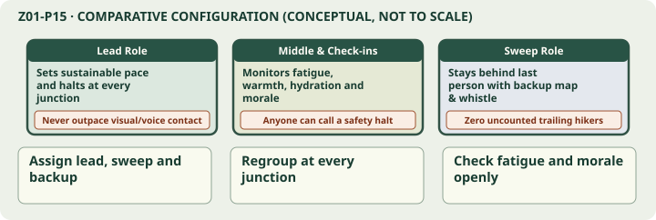

Z01-P15 · Survival fundamentals · New manuscript
Assign group roles and pacing boundaries
Maintain clear leadership, head counts and mutual accountability during group travel or emergencies.
When it applies · Groups of two or more hikers, families or mixed-ability parties on land. Solo travelers use external check-in contacts instead.
Equipment · Written group roster, agreed whistle signals, map copy for more than one person and shared emergency contact sheet.

Actions
- Designate a lead who sets a sustainable pace, a sweep who stays behind the last person, and a backup navigator carrying an independent map.[E11, E02, ED]
- Establish mandatory regroup points at every trail junction, water crossing, steep climb and visibility drop before stepping off.[E11, ED]
- Rotate check-ins for hydration, warmth, foot comfort and morale so quieter or fatigued members can call a halt without social pressure.[E11, E06, E08]
Failure recognition · Unassigned leadership, fast walkers outpacing slower members past forks, or hidden fatigue going unreported until collapse.[E11, E06, ED]
Verify · Every member knows who is lead, who is sweep, what whistle signal means stop and where the next regroup point lies.[E11, ED]
Stop or change course · If the group loses visual or voice accountability or someone cannot sustain the pace safely, halt immediately, regroup and revise the objective.[E11, T06, ED]
Evidence and editorial notes
- E02 · NPS · Ten Essentials (current web edition)
- Section: Navigation; insulation; emergency shelter; emergency food and water · Conditions: Outdoor trips; adjust kit to season and route
Support: Carry essential systems including navigation, insulation, light, water and emergency shelter.
Limitations: Carrying items without practice or cold-weather verification does not ensure readiness. · Conflicting evidence: None; baseline kit system architecture.
Editorial note: Supports failure-mode packing and kit verification cards. · Specialist reviewer: Field education and search and rescue
Primary source · checked 2026-11-24 - E06 · CDC · Preventing Hypothermia (current web edition)
- Section: Recognizing and treating hypothermia · Conditions: Cold wet exposure; signs such as confusion, slurred speech, fumbling or drowsiness
Support: Suspected hypothermia warrants prompt help and protection from further cooling. It can occur above freezing if wet or chilled.
Limitations: Early mild shivering can mask rapidly worsening judgment impairment. · Conflicting evidence: None; aligns with ARC and WMS guidance.
Editorial note: Anchors exposure-to-medical escalation thresholds. · Specialist reviewer: Wilderness medicine
Primary source · checked 2026-11-24 - E08 · CDC · About Heat and Your Health (current web edition)
- Section: Protect yourself from heat · Conditions: Outdoor activity in hot conditions
Support: Limit exertion in hot periods, take breaks in cooler places and monitor for illness.
Limitations: High humidity reduces sweat evaporation and raises heat strain at lower air temperatures. · Conflicting evidence: None; aligns with NWS-HEAT and NIOSH-H.
Editorial note: Anchors shade, pacing, and hot-weather shelter selection. · Specialist reviewer: Heat illness and emergency medicine
Primary source · checked 2026-11-24 - E11 · NPS · Hike Smart (current web edition)
- Section: Plan your hike; Stay together · Conditions: Groups on hiking routes
Support: Choose a route suited to the group's abilities and hike at a pace that keeps the group together.
Limitations: Fast hikers moving ahead at junctions is a leading driver of preventable separation. · Conflicting evidence: None; aligns with SAR prevention principles.
Editorial note: Core reference for group accountability and pacing cards. · Specialist reviewer: Group leaders and search and rescue
Primary source · checked 2026-11-24 - T06 · NPS · Outdoor Emergency Plan (current web edition)
- Section: If you get lost or hurt; call for help · Conditions: Outdoor US emergency
Support: Communicate location, last known point, situation and needs. Stay put when unable to establish a safe route unless immediate danger requires movement.
Limitations: Cell signal is unreliable in backcountry terrain; pre-trip plans bridge communication gaps. · Conflicting evidence: None; core lost-person decision rule.
Editorial note: Foundation for stay/signal/move and dispatch handoff cards. · Specialist reviewer: Search and rescue
Primary source · checked 2026-11-24
Source lineage · NPS Hike Smart and Ready.gov planning; new manuscript · Classification · New manuscript.